Cashew Lemon Spritz Cookie
~ raw, vegan, gluten-free ~
These divine Cashew Lemon Spritz Cookies just melt in your mouth due to their creamy texture. With a hint of lemon, they are light and refreshing in flavor.
Making every bite count
I try to be selective with the ingredients that I use in my recipes. Even if it is as small as a grain of salt or one drop of oil… it can all have an impact on your health. And speaking of oil, I added a few drops of Young Living Lemon oil, which is an essential oil that promotes clarity of thought and purpose. It also has a purifying citrus scent that is invigorating, enhancing, warming, and is known as one of the most fragrant essential oils.
Stop & smell the Lemons
I read that inhaling lemon can actually counteract occasional feelings of depression. This puts a whole new spin on “inhaling a dozen cookies.” hehe
Don’t confuse lemon oil and lemon extract. Oils are much more concentrated than extracts. The lemon oil is cold-pressed from the rinds of lemons, not the lemon fruit, and doesn’t contain alcohol. In many cases, you will only need a few drops of oil where you might have used a full teaspoon of an extract.
I mentioned above that this cookie has a creamy texture (thanks to the cashews), and it’s that wonderful texture that allowed me to use a piping bag and tip to create these fun shapes. I also testing out my Spritzer Cookie maker which did pretty good. Not all of the templates turned out so great but as you can see in the photos below… I was able to pump out some great shapes. It’s the small things in life that can bring such joy. :)
- 2 cups raw cashews, soaked 2+ hours
- 3/4 cup maple syrup
- 1/2 cup fresh lemon juice
- 1 cup shredded coconut
- 1/4 tsp Himalayan pink salt
- 1/2 Tbsp vanilla extract
- 6 drops Young Living Lemon oil
Preparation:
- Place the cashews in a glass bowl, along with 4 cups of water.
- Soak for at least 2 hours. Read more about why (here).
- The soaking process will help reduce phytic acid, which will aid in digestion.
- The soaking also softens the cashews so they blend nice and creamy.
- After the cashews are through soaking, drain, and rinse.
- In a food processor, fitted with the “S” blade, combine the cashews, maple syrup, lemon juice, shredded coconut, salt, vanilla, and lemon oil. Process until the consistency is like thick oatmeal (1-2 minutes). You will need to stop the machine every once in a while to scrape the sides down.
- This can also be done in a high-powered blend such as the Vitamix. The plunger will be needed. I wouldn’t attempt this on a less powerful blender.
- Load the batter into a piping bag and pipe out the cookies onto the teflex sheets that comes with your dehydrator.
- Dehydrate at 145 degrees for 1 hour, then reduce the temp to 115 and dehydrate for 24 hours, or until the cookies are dry but chewy.
- Storage:
- Keep in an airtight container at room temperature for up to 3 weeks.
- Store in the fridge to extend their shelf-life even more. Oh no! Have a stinky fridge? Place a few drops of lemon oil on a cotton ball and put in the refrigerator to help eliminate odors. :)
- These will freeze wonderfully as well!
Culinary Explanations:
- Why do I start the dehydrator at 145 degrees (F)? Click (here) to learn the reason behind this.
- When working with fresh ingredients it is important to taste test as you build a recipe. Learn why (here).
- Don’t own a dehydrator? Learn how to use your oven (here). I do however truly believe that it is a worthwhile investment. Click (here) to learn what I use.
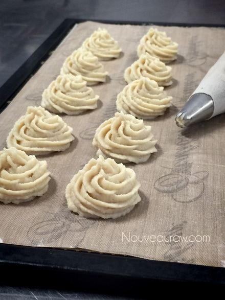
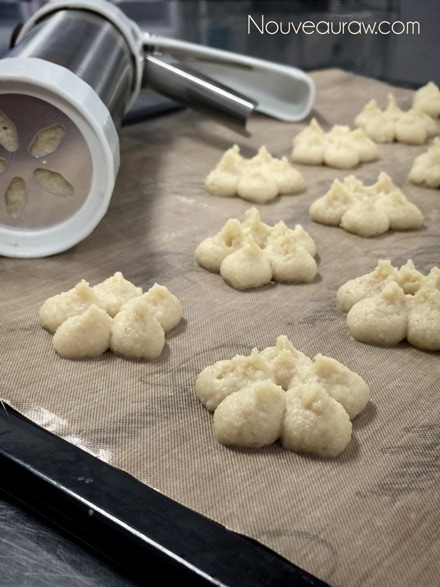
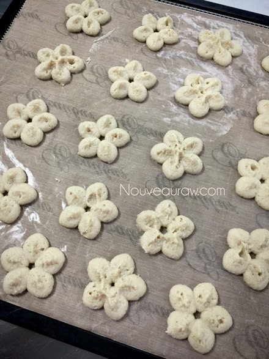
After about 4-5 hours, I removed the cookies from the non-stick
sheet and placed them directly on the mesh sheet to speed things up.
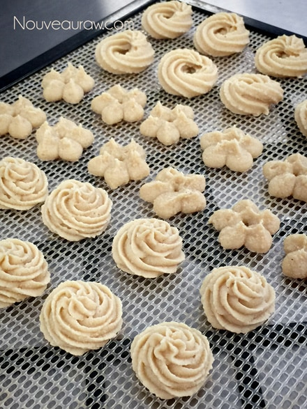
I am showing you the bottom of the cookies so you can see the
color difference indicating that the cookies are not ready just
yet. See how the color in the center of each petal is darker?
They are still sticky in that area. Just something to use as a marker.
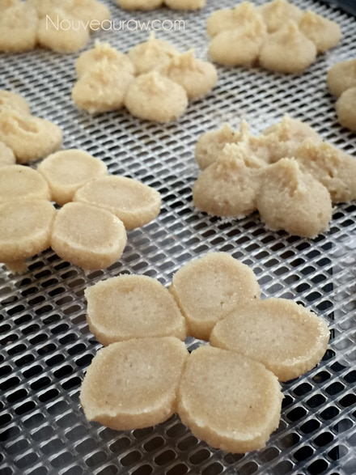
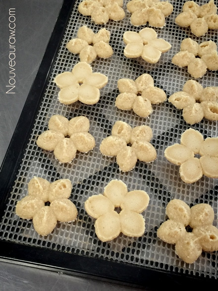
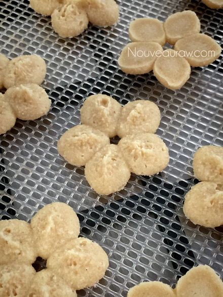
These were some that I just did freestyle with a star tip.
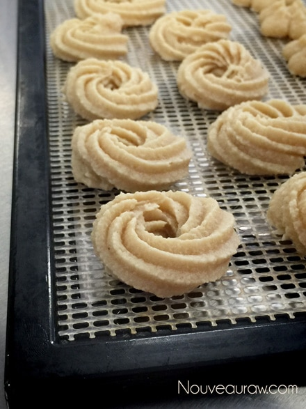
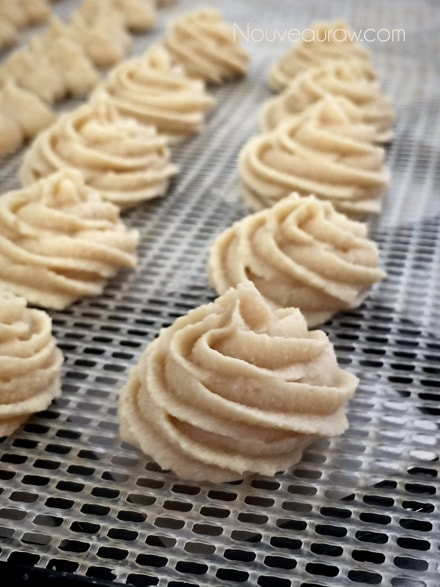
Selfie!
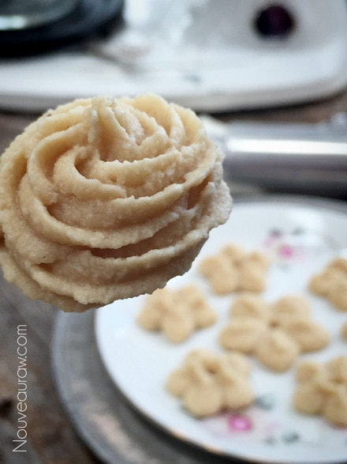
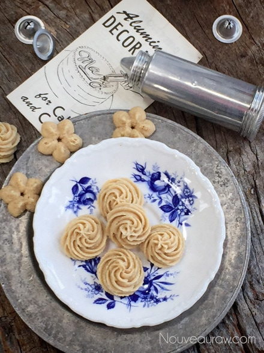
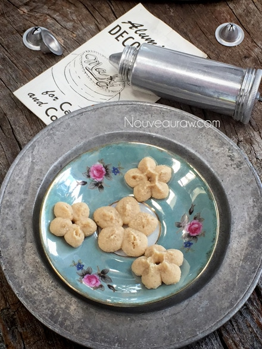
© AmieSue.com